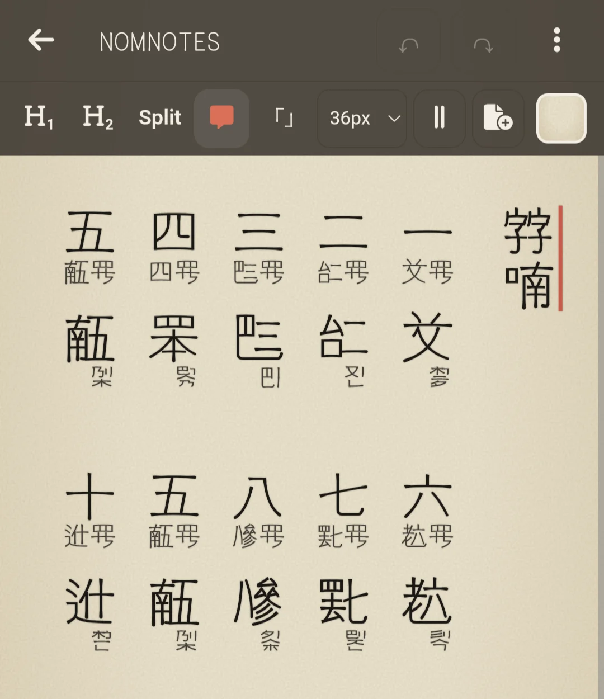
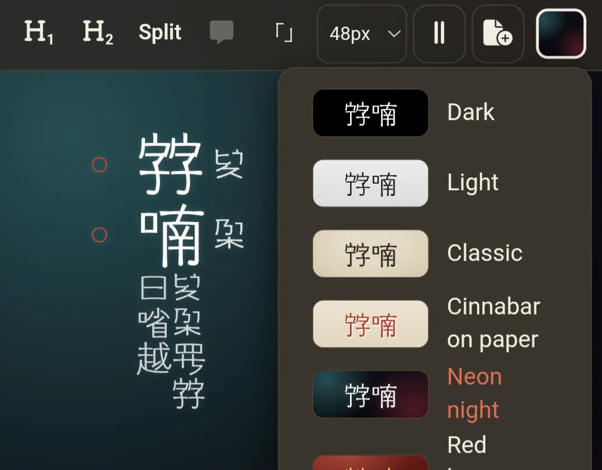
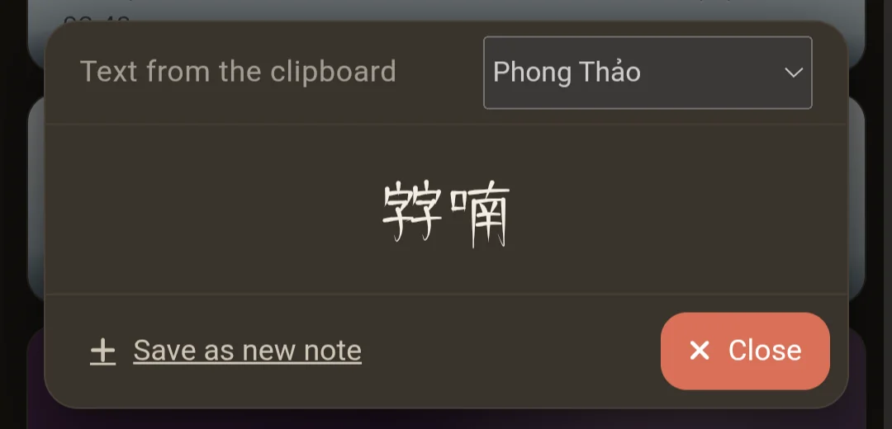

Write like old texts
Chữ Nôm in vertical columns or horizontal lines, with headings, two-column passages and readings beside the characters.

Pick a look of your own
Every note has its own font, text size and paper style, from dark backgrounds to old paper.

See your clipboard
The eye button shows what is on your clipboard in the font of your choice and lets you save it as a new note. When the clipboard holds Chinese characters, Chữ Nôm, QATT or PA, a short hint appears.

- Type Quốc Ngữ with Telex and pick the Chữ Nôm, or write QATT and PA directly.
- Share a note with a link, and export or import your notes.
- Sign in to keep your notes in sync on all your devices.
- Works offline and can be installed on your phone or computer.